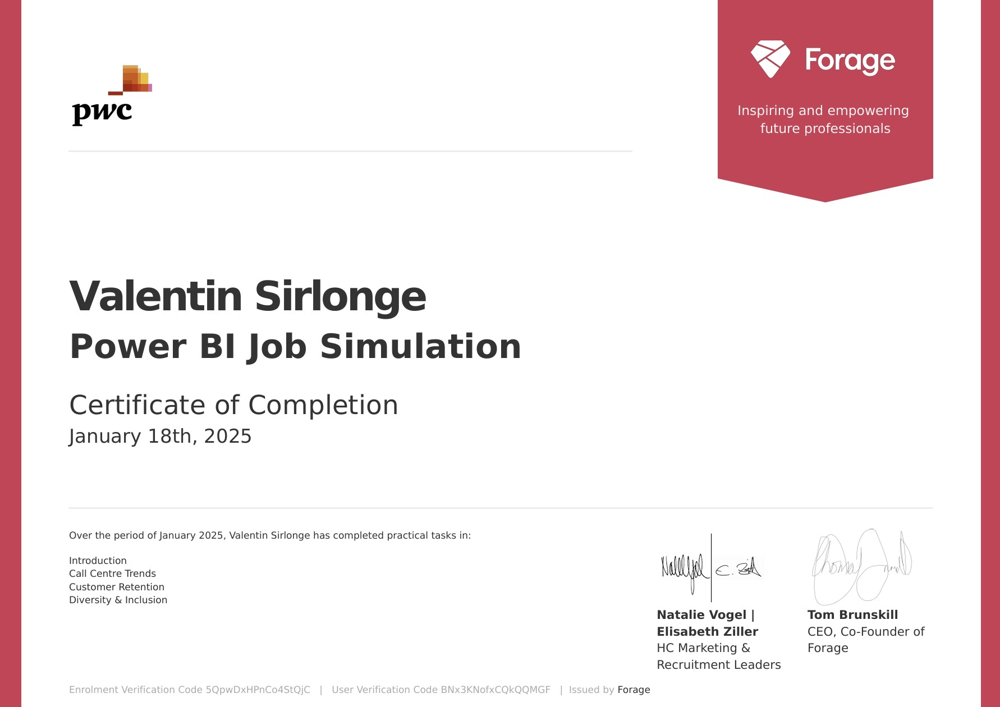

Earned from Databricks Academy, this certification validates foundational knowledge of the Databricks Lakehouse Platform. Skills covered include data management, Big Data principles, Data Intelligence concepts, and unified cloud architecture.

Completed a virtual job simulation with PwC Switzerland via Forage. Developed key Power BI skills including dashboard creation, DAX measures, KPI definition, and HR data analysis to derive actionable insights and recommendations.
Certification demonstrating foundational proficiency in Alteryx Designer. Key skills: workflow building, data cleaning and preparation, ETL processes, and analytical problem solving in a no-code environment.
Alteryx Designer Advanced
Certification demonstrating advanced proficiency in Alteryx Designer. Key skills: advanced workflow development, macro creation, analytic application design, spatial data analysis, and advanced data visualization.
Celonis Process Mining Fundamentals
Completed the Celonis Academic Process Mining Fundamentals program. Gained hands-on experience in analyzing business processes using event data and learned to identify inefficiencies and improvement opportunities through the Celonis platform.
Bloomberg Market Concepts
Completed the Bloomberg Market Concepts (BMC) certification, covering key areas such as economic indicators, fixed income, equities, currencies, and Bloomberg Terminal navigation. This course strengthened my understanding of global financial markets and macroeconomic analysis.